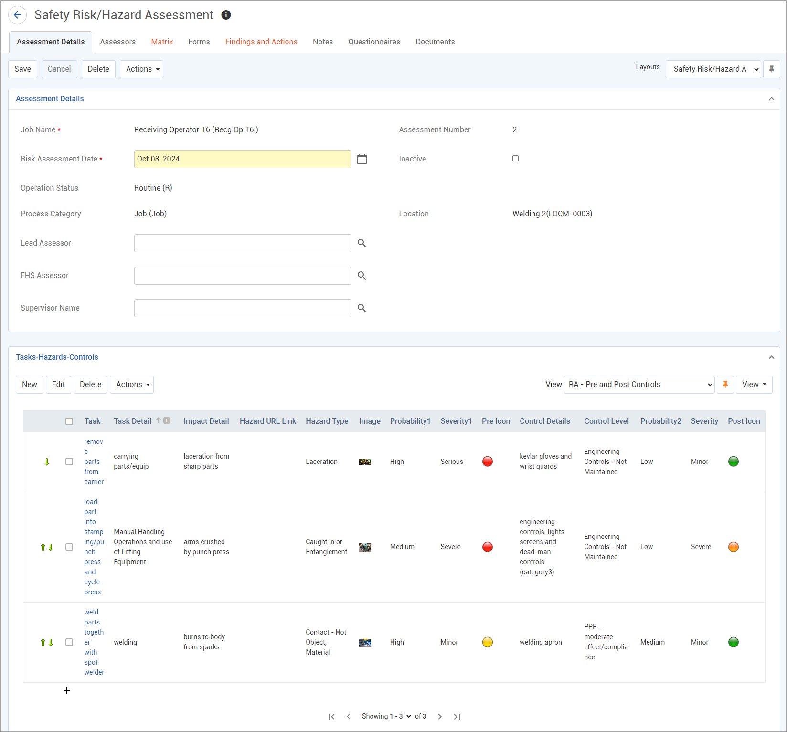

Risk assessments can also be imported using the Import Utility (see Importing Text or XML Files into Cority Tables).
If you are updating an existing record, but the matching RiskAssessmentID is not found and enough data is provided, Cority will create a new record.
If you are importing a new risk assessment and there is no active risk assessment, the new one will become the active risk assessment.
If you are importing a new risk assessment and there is an active risk assessment but the new one has a more recent date, the active risk assessment will become inactive and the new, imported one will become active.
In the appropriate menu, click Risk Assessment/JHA (“Environmental Aspects” in the Environmental menu). All jobs whose Assessment Types match the Cloud you started from are listed.
Click New to create a new assessment, or click a link to view an assessment.

There can only be one active assessment per job per module.
If you want to create a different version of the job’s assessment information but retain the original, choose Actions»Clone and Inactivate. The original assessment is marked Inactive, and the job information, assessment reason, linked findings and actions, and information in the Tasks-Hazards-Controls section are copied into a new active assessment record. If the Parentfield is selected on the original assessment, on the cloned record it will display the Jobvalue from the initial risk assessment record, followed by the Risk Assessment IDin parentheses.
If you want to copy the current assessment to a different job, choose Actions»Copy and Create New Risk Assessment. You are prompted to select the job the copied assessment information should be linked to. The job information, assessment reason, and information in the Tasks-Hazards-Controls section is copied into a new active assessment record for that job. Any linked findings and actions are not copied over. If the selected job does not have any associated Risk Assessment Date, the Risk Assessment IDfor the new record will be 1. If the job had an existing risk assessment record (and Risk Assessment Date), the Risk Assessment IDfor the new assessment record will be the next number in the sequence for that job/task.
On the Assessment Details tab, in the section at the top, identify all persons involved in this assessment.
In the Tasks-Hazards-Controls section of the Assessment Details tab, capture the tasks as well as the potential hazards and recommended controls.
If a Safety Data Sheet is associated to an agent or product (in the AgentHazard look-up table), you will see an SDS link to the left of the task. Click the link to open the SDS in a separate browser window. An SDS can be added to an agent or a product; if no SDS is linked to the selected agent, the link will open the SDS for the product instead.
Streamline your data entry by setting up relational tables and system settings that filter available options based on your selections. For example: assessment category > agent group >agent > special notation. Similarly, the risk factor qualifiers available for each probability and severity depend on the assessment category chosen. Contact your Cority representative for assistance in setting up these relationships.
Create a separate record for each hazard.
To copy a risk assessment record, select the record and choose Actions»Copy Process/Task. A new record is created with the same data; open the link to record any new or different information.
A hazard record may be created automatically if a choice in a related questionnaire is identified as a risk factor. Contact your Cority representative for assistance setting up this custom functionality.
You can import tasks-hazard-controls records using the Import Utility (see Importing Text or XML Files into Cority Tables).
If multiple records have the same Agent, Process, and Task Type, select them and choose Actions»Merge Risk Records. The records will be merged into the record with the lowest Reference ID, preserving all data in that record but merging the Task Detailsand Hazard Details from each merged record.
If added to a custom layout, you can choose Actions»View Chemical Inventoryto view any chemical products that have a current inventory value and that match the GDDLOFB criteria selected on the risk assessment record. If you select one or more products, the corresponding record(s) will display in the Tasks-Hazards-Controls section of the risk assessment record.
To add a task, click New.
For a new record, enter the Task Detailsand select the Task Type.
Enter the Hazard Detailsand select the Hazard Type. Select the Probabilityof the hazard occurring and the potential Severityof resulting injury or illness. For Industrial Ergonomic assessments, select the Duration and Frequency.
If a Hazard URL Link field was added to a custom layout, it may be populated based on the selected Hazard Type. For a single hazard, the link field will populate if the URL Link field in the Agent Hazard look-up table is populated correctly; if multiple hazards are specified, the link for the first hazard listed will populate the field. When populated, a globe icon appears for the risk assessment entry on any associated Tasks-Hazards-Controls sublists, and can be clicked to open the URL in a separate browser tab.
Enter the Control Detailsand select the Control Level. Select the Probabilityand Severityof the hazard when using the control.
If you are using the Pre, Post and Future Controls view, you can enter a second control in the fields on this form. If necessary, use the Additional Controls tab.
You can add a product hazard to a risk assessment and all of its agents will be added automatically. You must add the Product column to the view and add the Productfield to the Task-Hazard-Control form layout (see Changing What is Shown on a List or Form). When you select a value in the Productfield (from the AgentHazard look-up table) and save the record, a record is created for each agent associated with the product.
The Risk is calculated based on the Probabilityand Severityidentified for each stage (based on the hazard alone, with use of the first control, and with use of the second control). The calculation formula is set by the administrator in the Risk Settings (see Working with Risk Settings).
To print a Job Hazard Analysis Report, choose Actions»Generate JHAon the Assessment Details tab. To just print the assessment form (without the buttons and tabs showing), choose Actions»Print Assessment- the RiskAssessmentIdmust be populated on the record. The risk matrix will print in color (but will not include the task details shown on the enhanced matrix).
Click Saveto return to the Risk Assessment form.
The Matrix tab provides a visual representation of the risk levels over time. See Working with Risk Assessment Results.
The Findings and Actions tab provides views for all findings and actions linked to a job, risk assessment, and/or job hazard that are recommended (or required) to protect workers from hazards, such as choosing appropriate protective equipment, and ensuring that workers receive the equipment needed.
For information about recording a finding and its actions, see Recording a New Finding.
To view an action’s attachment, open the finding and choose Actions»Open Document.
On the Notes tab, enter any notes about the assessment. For more information, see Adding Notes to a Form.
The Forms tab displays all forms in the PDFForm look-up table that have been linked to the risk assessment module. Open and complete these as required.
The Questionnaires tab displays all questionnaires associated with any of this job’s assessments (active and inactive, from all applicable Clouds) and allows you to associate questionnaires with a record. For information about creating and administering questionnaires, see Questionnaires.
The Documents tab displays all documents associated with any of this job’s assessments (active and inactive, from all applicable Clouds) and allows you to link external files containing background or supporting information to an assessment record for easy access to the file. For more information, see Linking or Importing a Document.
You can also attach a document directly to a task record, either by opening the task and adding it to the Documents tab, or by clicking the camera icon in the Tasks-Hazards-Controls section of the Assessment Details tab. When you attach a document using the camera icon, a preview thumbnail of the document is displayed in the Tasks-Hazards-Controls section; if the file is an image, hovering over the thumbnail will display the full-size image. The document will also be listed on the Documents tab where it can be removed if necessary; if you attached an image, it will be displayed in the JHA Report.
If you have the 'Industrial Ergo w/ Motion Capture' license key, and the appropriate role permissions, you can capture and upload motion capture videos.
When processed, the motion capture assessment:
Note: Administrators can choose to have faces, or the entire subject, blurred for privacy.
All assessments created for a task are listed in the 'Motion Capture Assessments' sublist, where they can be edited or removed.